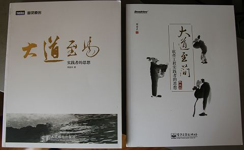
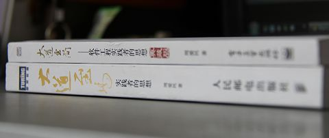
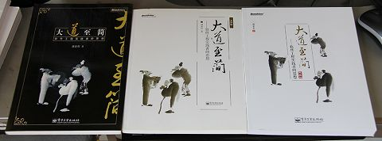
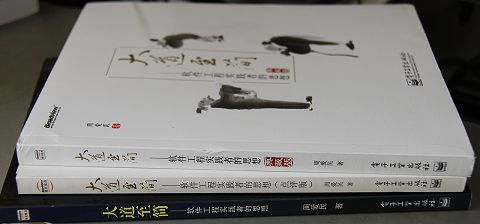

什么！你还在讲《大道至简》？！
是的，我说的是《大道至简》，它的上一个版本是“点评版”，也是我这么多年来非常遗憾的一个版次。当然，这也是刊印这个“典藏版”的最基本和最强大的动力了！
第四版前言
不要急
我是天生的急脾气。据父母说，我曾经与哥哥各分得一桃，便见我一口、两口，未等到第三口咬实在，桃就已经全下了肚。然后便眼巴巴地看着哥哥吃得欢乐，而我却连桃的滋味都不太知道。
不知道我的父母是不是拿了《西游记》中的故事来哄我，但若以我小时候的性急，确实可以做到“桃味不知”。以至于到了后来，等到我十多岁的时候，渐渐懂事了，便在自己的书房写了一幅字：默然心自澄，谦逊品渐高。
个中还有许多缘由，但终归是渐渐地安静了下来。安静下来了，便有了机会来反思一下。若是总急于去解释什么、争辩什么，那么眼里便只见别人的弊端，耳中便只有别人的错漏，因而也就总是很难回头来看看自己。
可能那个自己，正立在田间地头指指戳戳，出言絮絮状若村妇。
读书
在我看来，反思既不是设问，也不是反问，更不是某种思维法（例如逆向思维），它只意味着对一个目标的持续关注。
读书与写书，是我持续关注的一个目标。
然而就读书来说，我读得不多。我习惯大量地收集与归目，这一方面是为了查阅的方便；另一方面，当遇到某些问题或思考倾向了某个话题，我总是能及时地知道“找某类书来翻翻”。收集这些书的目的，原本也无过于此。
但我总归还是读些书的。我读书很细、很慢，常在空白处写写画画，甚不爱惜。读书如食，贪而成嗜，这种读法的所得是难为浅读者道的。不过回到我们这里的话题，这样地收集与读书，或是我常常“反思”的一个源起。
写书
写书是我的另一种反思。
但凡一件事情，我们都该有自己的观点。对于这观点，应该先说清楚它，再坚持它，再尝试否定它。《大道至简》一书三版，便是我在说清楚自己的观点。而我这五年来沉默与坚持，便是不断地向自己挑战：我说得对吗？我在陈述一种什么样的道？这是道吗？这是未来吗？这是方向吗？以及，这一切或许原本就是错的？！(*1)
*1 引自我的博客文章“与读者谈谈《大道至简》这五年”，文章写于该书第三版（点评版）出版之际。
正如我一直以来在做的，写书即是在整理我的观点，坚持它，而后尝试否定它。这样的反思是我这些年来写作的主要动力。我的所得，往往不是在于追求新的技术，进而去学习、应用它们，以获得某种技艺上的纯熟，而是往往在于对它们背景里那些旧的、真实的、剥离了广告术语的东西的追问。这种追问，既是对别人的，也是对自己的。惟只这样公平地置疑，才脱离了促狭的味趣，而变成进步的动力。
这才是本书的姊妹篇《大道至易》的由来，也是本书发行它的第四版的原因。
第四版
首先，坦率地说，这一版并没有什么新东西。
若以完整性而言，第三版（点评版）已经有本书的全部内容了。但点评版的问题在于版式过乱，印刷质量也有问题，并且它的字体太小以至于影响到了阅读。因此若继续刊印点评版，其实是对读者的不负责任——所以如果你是第三版的读者，那么第四版真的只益“典藏”。若退至第二版，则又因为内容上缺少“第十章“具体工程”，而无法作为姊妹篇《大道至易》（以下称做“易”）的参考。当然，再追溯至第一版（电子版，2005.11.06），则内容上缺的就更多了。
“易”是本书的后续，并基于本书中几个关键问题的反思。这些反思起至本书电子版发布后不久，只是在这么多年之后，我才有将它写成一本书的能力与阅历罢了。但是“易”一书的写作风格和内容体系与本书完全不同，因此根本上无法做成同一本书。
所以一定程度上来说，这本“典藏版”既是为读者“典藏”而出，亦是专为《大道至易》的发行而出。在内容上以第二版为底本，加上了第三版中的“具体工程”一章；并且，考虑到典藏的价值，收录了本书的公开文档“幕后故事”的精华摘选。
惟只陈述这一事实，敬请读者谨细遴选。
致谢
感谢所有的读者、编者以及一直以来支持我的朋友们。
感谢李维先生为本书作序(*2)。
*2 本版选用了李维先生在第二版中所写的序“停下来，思考才是进步的本质”。多年来，这句话是时时鸣响于我耳畔的警语。
感谢所有对这本书提出意见、观点和评论的朋友们。
感谢那些在这本书的撰写与出版中给我帮助与支持的同事、好友和同行专家们。
感谢博文视点资讯有限公司。
感谢我的中学语文老师。
感谢 Joy。En，……我最爱的妻。
周爱民
2012 年 5 月
呵呵，《大道至简》典藏版与《大道至易》的对比：

（都是白色呵，不过《大道至简》典藏版有压纹亚膜工艺，手感相当相当好！赞个！）

（在书名上都采用了金色，相当有套装的感觉，姊妹篇嘛，呵呵呆）
又，《大道至简》典藏版与旧版的对比，厚度仅有少少的变化呵：

（典藏版在封面图的处理上，似有神来之笔哇）

（再看看书脊的效果呵，点评版跟典藏版还是很有区别的）